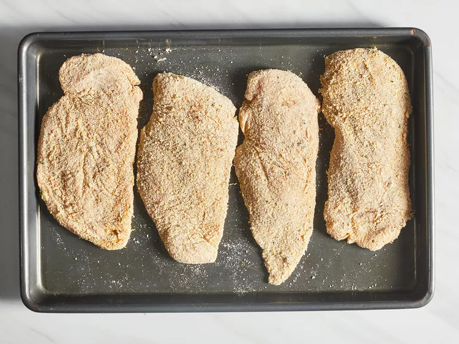
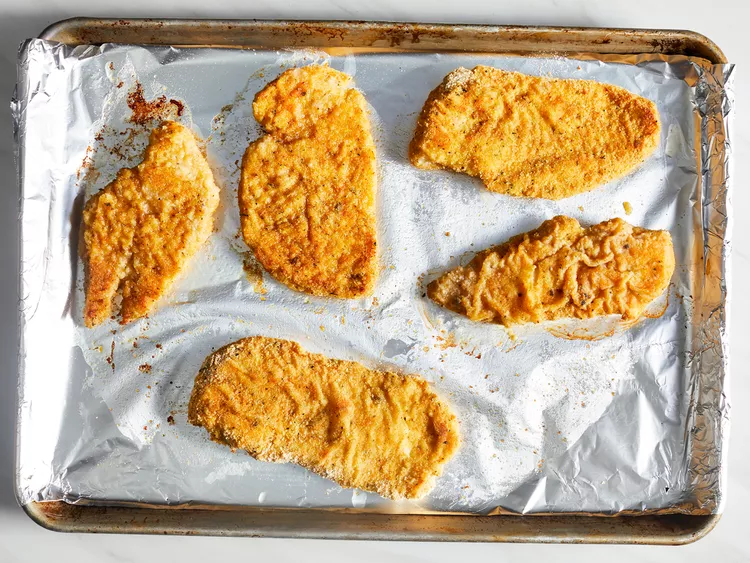

Baked Chicken Schnitzel
Chicken schnitzel is a breeze to make in the oven. Plus, this method uses less oil and has easier cleanup. The breaded chicken breasts are baked until golden and crispy on the outside, yet they're still tender and juicy on the inside. Serve schnitzels with lemon wedges and a German-style potato salad.

Think you can't make chicken schnitzel without frying? Think again! This baked recipe imitates that deep-fried feel without using a ton of oil. All you need is to employ a couple simple hacks — heat the pan beforehand and drizzle the chicken with olive oil twice.
Description:
Schnitzel, which originated in Eastern Europe, is a thin slice of meat that is breaded and fried. You can make it with chicken, pork, veal (wiener-schnitzel), and other types of meat. The word "schnitzel" comes from the German word "schnitt," which means "cut."
Chicken schnitzel pairs well with just about anything, from French fries to steamed broccoli.
Ingredients:
1 tablespoon olive oil, or as desired
1 large egg
6 chicken breasts, cut in half lengthwise (butterflied)
salt and ground black pepper to taste
¾ cup all-purpose flour
1 tablespoon ground paprika
2 large eggs, beaten
2 cups seasoned bread crumbs
1 large lemon, zested
Steps
- Step 1.
Gather all ingredients.
- Step 2.
Preheat the oven to 425 degrees F (220 degrees C). Line a large baking sheet with aluminum foil and drizzle olive oil over foil. Place the baking sheet in the oven as it preheats.
- Step 3.
Meanwhile, place chicken breasts between 2 sheets of plastic wrap on a solid, level surface. Firmly pound with the smooth side of a meat mallet to 1/4-inch thickness. Season both sides with salt and pepper.
- Step 4.
Mix flour and paprika together in a shallow bowl. Whisk eggs, salt, and pepper together in a second shallow bowl. Mix bread crumbs and lemon zest together in a third shallow bowl.
- Step 5.
Dredge one piece of chicken in flour; shake off excess. Dip into beaten egg. Lift up so excess egg drips back in the bowl. Press into bread crumbs to coat both sides. Place the breaded chicken, unstacked, onto a plate. Repeat with remaining chicken.
- Step 6.
Remove the baking sheet from the oven. Arrange chicken in a single layer on the hot sheet. Drizzle more olive oil over each piece.

- Step 7.
Bake in the preheated oven for 5 to 6 minutes. Flip chicken and continue baking until no longer pink in the center and the breading is lightly browned, 5 to 6 minutes more. An instant-read thermometer inserted into the center should read at least 165 degrees F (74 degrees C).
